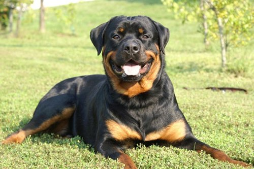
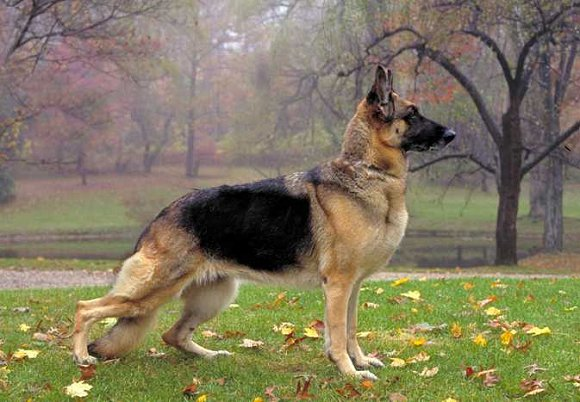
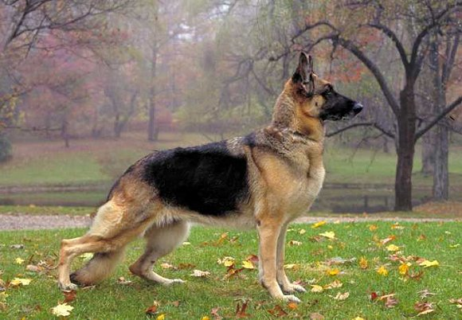

DOGS
There are lots of breeds of dogs. Each dog has its own characteristics. The species of dog determines the size, characteristics, and appearance. Not all dogs have one breed. Those are called mutts; mixed breed. Most dogs are pets. Others do hard work such as working with the police or guiding blind people. Dogs are amazing animals.
Here is a list of some of many dog breeds.
- Poodle
- Afgan Hound
- Basset Hound
- Bulldog
- Pembroke Welsh Corgi
- Beagle
- Boxer
- German Sheperd
- Shar-Pei
- Labrador
- Bichon Frise
- Jack Russel Terrier
- Chinese Crested
- Tibetian Terrier
- Newfoundland
- Akita
- Doberman
- Golden Retriever
- Komodor
- Cocker Spaniel
- Rottweiler
- Smooth Fox Terrier
- Great Dane
- Yorkshire Terrier
- Soft-Coated Wheaten Terrier
- Norwich and Norfolk Terrier
- Vizla
- Dalmatian
- Australian Shepherd
- Shipperke
- Old English Sheepdog
- Dachshund
Images


 
